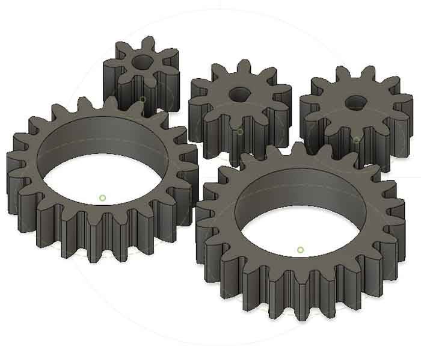

The Digital Telescope:
Project Summary
As a physics concentrator beginning a new hobby of looking into the night sky, I thought a telescope would be the perfect canvas to create my final project in this class. For this project, I transformed a telescope into a computer controlled device. Over wifi connection, you can see the image as seen through the telescope viewfinder and focus the image in real time. This uses a stepper motor with a gear reduction to adjust the focusing knob and an ESP32-CAM to capture a livestream of the telescope's viewfinder image. To achieve this product, I first designed 3D printable pieces including a clamp that attaches to the telescope and holds the stepper motor, battery pack and other circuitry, gears for the stepper motor and the focusing knob, and an adapter that connects the ESP32-CAM to the telescope lens. Detailed documentation can be found below for the creation of these pieces and the wiring of the stepper motor and ESP32-CAM. These were then attached to the telescope and I uploaded the basic example code for livestream video to the ESP32-CAM. (Instructions for this are here). Finally, Arduino IoT was used to control the focsuing knobs. This code can be found under the heading, "Stepper Motor Control (August 1st, 2021): Arduino IoT Control".
Unfortunatley, once my project was completely ready for testing, I had only cloudy and rainy nights for testing my digital telescope. The video above features a branch on a tree in my yard. It is certainly not as exciting as the moon, but it works well for the demo. Hopefully, there will be some clear nights soon and I can upload some photos from the completed digital telescope then. (The moon pictured here was taken with an iPhone, not the ESP32-CAM).
Using the Digital Telescope

The video interface includes a few useful buttons for optimal control of the telescope. The basic quality, brightness, contrast and saturation sliders are helpful for adjustments on the telescope image, and most other setting can just remain in their default positions. However, H-Mirror and V-Flip are extremely helpful for this project. For those who have used telescopes before, it can often be confusing when trying to track something across the sky. The optics behind the telescope lenses inverts the image that we recieve in the viewfinder, so when moving the telescope right, the image appears to move left. The same inversion occurs when moving vertically. These two image inversions on the livestream correct this optical trick and eliminate all confusion.
Controlling the telescope focusing with Arduino IoT is extremely simple. This telescope only has one focusing knob, but with the precision of the stepper motor, we can turn this into both a fine and coarse focusing knob. In fact, using the slider to adjust focusing depth, the fine focus can be made extremely accurate. While the coarse focus has a fixed focusing depth, small values on the slider will produce very fine focusing while larger numbers will produce coarser focusing.
Project Success
Ultimately, my project was fairly successful. I had hoped to include both the controls and video display on one host website, but I wasn't able to do so in time for the end of the class. This is the first correction I would make for my next go at the project. ANother improvement for next time would be to make it controllable for anywhere, not just over local wifi. A little more ambitious with this large a telescope, but perhaps with another model I could even wire remote control of the telescopes position in the sky as well. If possible, these would be my next steps with this project.
Otherwise, my project worked as designed. The video displays real time images from the telescope viewfinder and it can be focused remotely with the press of a button.
See Below for Detailed Documentation on Creating My Final Project:
Final Project Proposal (June 24th, 2021):
The Telescope:

The Wirelessly Controlled Telescope Proposal:
I am still fairly uncertain about what I eventually want to do as my final project. However, my inital idea has to do with a telescope that I recently recieved. The telescope I have is already motorized and is remotely controlled by a wired attachment. Therefore, using the control panel, you can change where the telescope is pointed, adjusting both vertically and horizontally.
My project will hopefully solve a few problems. It will ideally allow for wireless control of the telescope's position, along with wireless focusing. I hope to also be able to render the viewfinder image on a device like a computer or phone. Additionally, becasue of the optics of the telescope, the image seen in the viewfinder is actually flipped from reality, so within this interface, I hope to convert the image to its true form.
My idea is to add a removable camera to the end of the eyepiece (so it can be set up and used with a variety of different sized eyepieces). With this camera, I hope to be able to wirelessly attach it to my phone or computer so I can see the image on my device without having to look through the eyepiece. I think it would also be beneficial to motorize the focusing knobs to be wirelessly controlled from the same device interface. Hopefully, the positioning motors could also be controlled from here.
Ultimately, the perfect viersion of my project would be an app on my phone that could be used to see through the telescope, control its position, and focus it to find and track things in the night sky. This could also be used to take high quality photos of the night sky. Maybe, someone else with the same app could even see through the telescope in real time, just without direct control of it.
Telescope Viewfinder:

Telescope Control Panel:

Drafting a Basic Design Concept (July 8th, 2021):
The basic, updated concept for my telescope design will be a wirelessly controlled focusing device for the telescope that allows you to actively see through the telescope lens as it is focused. To achieve this final product, I will need a stationary mount that attaches directly to the telescope. This will hold the necessary circuitry components and supply the support for the motors required to turn the focusing knobs. To actually attach the motors to the focusing knobs, I will likely have to 3D print a clamp-like, or tight fitting piece. Becasue there are knobs on each side of the lens, an extra motor could also be wired and attached to provide additional power and torque.
Additionally, I will mount a detachable camera to the viewfinder at the end of the lens. The ESP32-CAM should work well for this function, and can be accessed over wifi. This would not only allow for complete remote control of the focusing mechanism, but it would also achieve my goal of allowing multiple people at different locations to be able to see exactly what I am through the telescope in real time.

Designing the Device (July 13th, 2021):
Motor Control
For optimal control of the motor's rotation, the stepper motor will be used to turn the focusing knob. However, the motor didn't appear to have the necessary torque to actually turn the knobs. If affixed on the same axis as the focusing knob, the motor could just barely turn the knob, and only very inefficiently. To overcome this problem, I experimented with a few different concepts. Becasue the focusing knob is grooved, it is almost like a gear. Therefore, using a small grooved lego piece, I was able to make a gear ratio that was able to easily turn the focusing knob (although extremely slowly). For the true design, I can create ideally linking gears, designing one to fit perfectly aound the focusing knob and the other to slot onto the stepper motor.


Fusion 360 Modeling
The Gears:
As described above, gears will be the ideal way to adjust the focusing knob using the stepper motor. Therefore, in Fusion 360, I used the spurgear addon to easily create a few generic gears. For the ideal gear ratio, the stepper motor gears are much smaller than the focusing knob counterparts. I also added the D-shaped axle holes for the stepper motor and added thin planes across the face of the focusing knob gears (so they have a large surface area to be glued onto the knobs) which were measured to fit perfectly around the knobs.
Download the Fusion 360 gear model here: Telescope Gears.f3d
Download the mesh STL file here: Telescope Gears.stl
Download the Prusa 3D printable gcode file here: Telescope Gears.gcode
The Clamp:
To create the clamp I decided to design two half cylinders that could be tightened with bolts to fit tightly around the telescope body. To do so I measured the diameter of the telescope and created a sketch with a circle just barely larger (in order to accont for slight error in the size of the telescope tube). To ensure it was guarunteed to fit tightly and securly, I removed a small portion of at the top and bottom where the bolts would attach. With slight give in the plastic material, this would surely pull the thin cylinder to fit nicely. Now, I just need to add a flat face to secure the stepper motor. I will drill holes on this flat area after it is printed to ensure the stepper motor is placed in the ideal place to allign the gears. Here I also added a flat "roof-like" feature for the metro board to have a place to easily attach to.
Download the Fusion 360 gear model here: Telescope Clamp.f3d
Download the mesh STL file here: Telescope Clamp.stl
Download the Prusa 3D printable gcode file here: Telescope Clamp.gcode
The ESP32-CAM Holder:
Finally, I needed to create the device that would hold the ESP32-CAM in place over the viewfinder lens. This had to be some sort of detachable feature that would hold the camera lens directly over the viewfinder lens. This design has a slot shaped perfectly for the ESP32-CAM to fit in back with just the camera lens able to fit through. This is centered within a circular piece that will fit over the viewfinder lens. It has notches to fit around the geometry already present on the telescope lens. To attach, bolts can be threaded through the holes in the side of the circular piece and tightened onto the viewfinder lens. These should also allow for microadjustments to ideally position the ESP32-CAM over the viewfinder. This part also had to be measured with very low tolerance. Some of the viewfinder lenses have only an extremely small area in which the bolts can possibly be fixed. This means that the bolt holes had to be placed in the perfect position to be able to grab onto the lens without slipping off.
Download the Fusion 360 gear model here: ESP32-CAM Holder.f3d
Download the mesh STL file here: ESP32-CAM Holder.stl
Download the Prusa 3D printable gcode file here: ESP32-CAM Holder.gcode
3D Printing (July 20th, 2021):
In order to 3D print my parts, I saved the fusion files as .stl mesh files and uploaded them to Prusa. From here I was able to slice each part individually using 0.2mm quality generic PLA filament. The individual .stl and .gcode files can be downloaded above. The gears and the ESP32-CAM Holder each had reasonable print times, however the telescope clamp was a very large print. It would take nearly 11.5 hours to print the telescope clamp. Therefore, to simplify the printed process, I combined all 3 parts into one print file. This was, the 3D printer could be run overnight once and produce all 3 pieces. Thanks to Nathan, Victoria and the Harvard 3D printers for helping make my parts a reality.
Download the Prusa 3D printable gcode for all the parts combined here: 3 Parts.gcode

The ESP32-CAM Testing (July 20th, 2021):
Now it was time to experiment with the ESP32-CAM to make sure it would work well with my telescope. I followed the steps to upload the correct code on the AI Thinker ESP32-CAM. I had to wire it to the USB attached FTDI programmer and when uploading code, I had to connect the GPIO 0 pin to the ground pin as well. Then, removing the GPIO-0 to ground connection and opening the 115200 baud serial monitor, hitting the reset button on the ESP32-CAM produced the website link where I could access the video stream. Testing the ESP-32 CAM with an unfocused telescope produced an image almost identical to what I would see looking through the eye piece with my own eye. With this promising result, I had to wait for the next clear night to test how well it would work when focused on the moon.

The ESP32-CAM (July 27th, 2021):
The first step for attaching my ESP32-CAM to the telescope was to make sure I could connect to my CAM while it was not attached directly to my computer. I completely this testing over the class 9 assignment, and a more detailed documentation of this process can be found there. However, to put it simply, I powered the metro with a battery pack and connected the ESP32-CAM to ground, power, TX and RX pins. This gave me an image the would read on my computer while my CAM was within the range of the WiFi.
Next, I inserted my camera into the newly 3D printed CAM-Holder piece and attached it to the telescope viewfinder. This worked extrmely well, and I was immediately able to see blurry leaves and trees on my computer, taken directly from the ESP32-CAM. As I moved the telescope around and watched the image on the computer, I remembered that the telescope inverts the image as seen naturally. In other words, when the telescope moves up, the image looks like it is panning downwards. Similarly if moved left, the image appears to move right. This backwards thinking is often hard to grasp and remember when following, or locating something in the sky. Therefore, it is very beneficial that the ESP32-CAM interface allows you to flip invert the camera's output. Finally, at night, I was able to focus the ESP32-CAM equipped telescope on the moon! Unfortunately, it was very hazy and the moon was behind some trees when I was trying to fous it. Also, the WiFi, did not reliablly reach my back yard where I was trying to get my image of the moon. Therefore, the first lunar photo was little more than a small blurry fraction of the moon. It can only go up from here.
Stepper Motor Control (August 1st, 2021):
Wiring the Stepper
To wire the stepper to the Huzzah, I followed the wiring schematic found on the class website (which is also copied below). The DRV8834 stepper driver and the ESP32 Huzzah are powered with 9V. The Huzzah is also connected to the computer through the USB port. Finally, the Huzzah, stepper and a capacitor are all connected to the driver. I had to limit the current through the stepper, as it was getting extrememly hot very quickly. You can see Assignment 10 for a more detailed descriptipon of how this was done. Ultimately, the Huzzah was able to easily control the stepper motor with the following setiup.

Assembling the Stepper
The 3D printed clamp used to attach the stepper to the telescope fit perfectly around the body of the telescope. It fit tightly around the telescope once tightened with bolts at the top and bottom on the clamp pieces. In oder to attach the stepper to the clamp, I needed to drill 4 holes in the base of the clamp and screw the metal stepper holder directly onto the clamp. Once it was screwed on, I could attach the stepper parallel to the telescope and then add the stepper gear piece. With the wiring on top of the clamp, and the gears interlocking, it was ready to start to try and focus the telescope remotely.
Arduino IoT Control
I tried a few different processes for the stepper motor control of the focusing knobs. I tried physical ciruit control, simple arduino code and google firebase control. See Assignment 9 and Assignment 10 for some of these other trials. Finally, I settled on Arduino IoT to control the focusing mechanism on my telescope
Arduino IoT is actually very straight forward to unerstand and use. After logging into Arduino Cloud online, and navigating to Arduino IoT, you are brought to a page where you can start a new project. In different windows, you can easily create variables, and link them to buttons, switches or other widgets. The Arduino program then creates a skeleton code for you. All I needed to do was add the control code for the stepper motor and define what certain widgets would do. In the end, I had a code that produced 4 buttons and a slider on the Arduino IoT interface. Two buttons allowed for coarse focusing in and out. The other two buttons were defined for fine focusing. I also added a slider widget to help control how fine the focusing was. Therefore, each press of the fine focusing button could correspond with any turn angle up to about a quarter turn. This would allow for extremely fine focusing that would be impossible with human hands.
Stepper Motor and Camera Combined (August 3rd, 2021):
Finally, I transitioned the ESP32-CAM wiring from the metro board to the Huzzah that was already wired to the stepper. After programming the code onto the ESP32-CAM, I simply had to connect the power, ground, RX, and TX pins of the camera to their corresponding pins on the Huzzah. This was sufficient to transmit the video to the computer.
In the end, I decided to use two open windows in split screen to control my focusing and real time video feed. I attempted to find the html code for the video stream demo arduino code, however, it was not an easy interface to control. The html code was buried and hidden even in the inspect sources view of the page. Eventually, with the help of Nathan, I found a webpage that had some of the html source code for the demo. However, it was configured for face recognition and despite spending a lot of time trying to modify the arduino code, I was not able to seemlessly connect the focusing buttons, video stream and the correct button features (like H-Mirror and V-Flip). Therefore, my final project will require two open windows in split screen for optimal control.